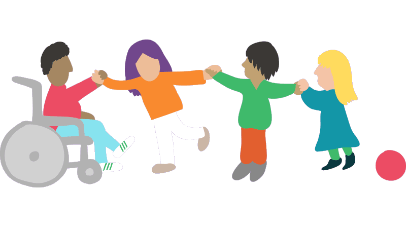
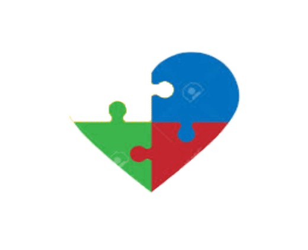
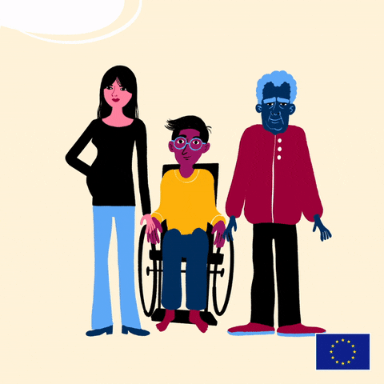
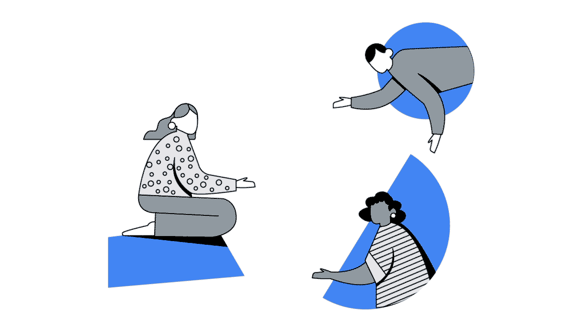

Es muy probable que hayas escuchado términos como: minusválido, discapacitado o personas con habilidades diferentes; sin embargo, ninguno de éstos es el correcto. El término adecuado, con el cual se busca eliminar prejuicios y conceptos estereotipados, es: Persona con Discapacidad.
Otra manera de fomentar la inclusión social de las personas con discapacidad es identificar y ser consciente de sus fortalezas, habilidades, competencias y debilidades. De esta manera, lograrás ver a la persona como es, y la discapacidad se convertirá en solo una diferencia física.

Aprendamos a aceptar nuestras diferencias. Todos somos diferentes desde nuestros gustos, sueños, metas, tamaño o color de piel, pero no olvides que todos contamos con los mismos derechos. La diversidad no debe ser percibida como un problema sino como un aspecto enriquecedor para nosotros mismos y para nuestra sociedad.

Socialmente existen muchas creencias falsas o mitos sobre las personas con discapacidad. Muchos de éstos se transmiten de generación en generación, y prevalecen debido a la escasa o errónea información que tenemos sobre discapacidad. Impidiendo la inclusión social de las personas con discapacidad en su totalidad.
Ante ello es necesario informarse correctamente y trasmitir información veraz. Existen recursos como cuentos, libros, documentales, películas que te pueden ayudar a ti y a los demás a comprender el significado de discapacidad e inclusión.

Buscar la inclusión de las personas con discapacidad en nuestra sociedad es principalmente un deber del estado; sin embargo, no es exclusivo. Desde nuestra posición podemos crear grandes cambios significativos, por ejemplo:
-En la escuela: Permite que tus hijos, sobrinos o hermanos, se acerquen sin miedo a los niños con discapacidad.
-En el trabajo: Fomenta que los espacios donde laboras sean accesibles para todas las personas.
-En la calle: Si encuentras a una persona en silla de ruedas y deseas ayudar, antes de hacerlo pregunta si requiere de tu apoyo.
